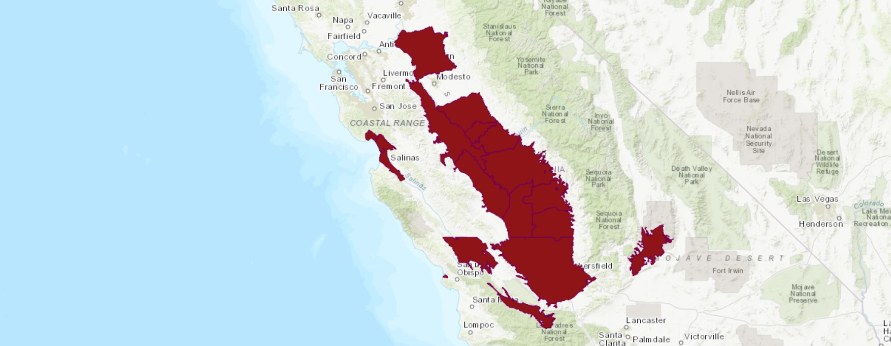
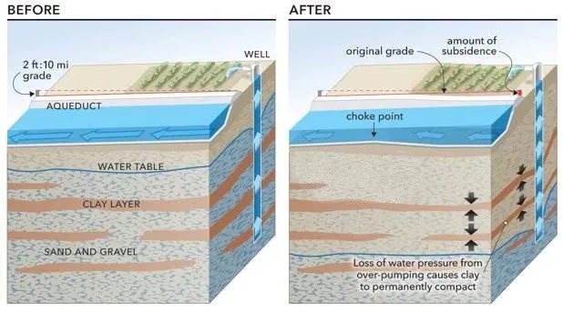
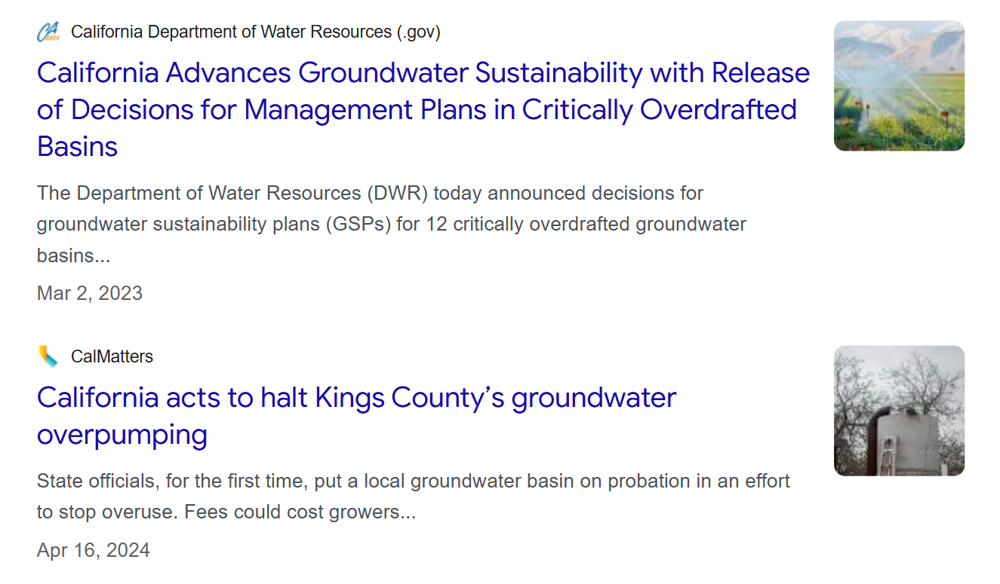
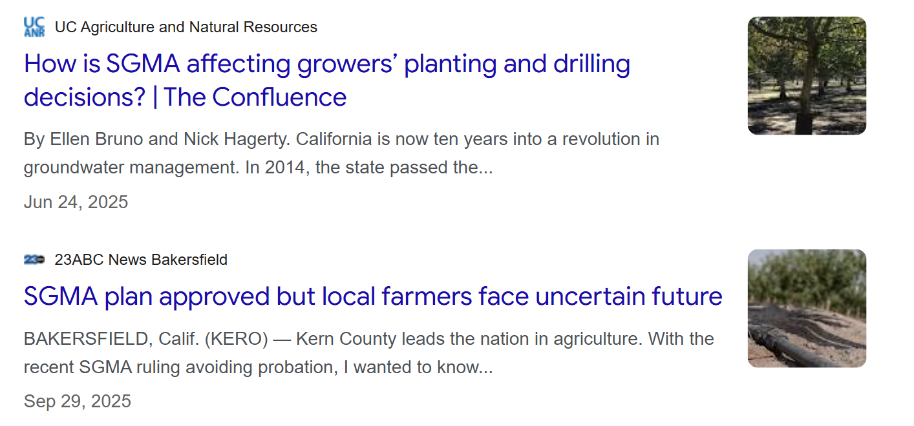

Flow patterns
Gravity-fed canals lose slope as land sinks → ↓ cfs capacity, ↑ energy and cost to deliver the same water.
02 · Overdraft · DWR Bulletin 118
California designates basins where pumping chronically exceeds recharge. The San Joaquin Valley contains the largest cluster of critically overdrafted basins — triggering mandatory SGMA sustainability plans.
Basin map: DWR Bulletin 118 · Chart: county Δ groundwater (ft), CASGEM 2012–14 vs 2018–22

DWR critically overdrafted basins — San Joaquin Valley highlighted

Pumping lowers pore-water pressure → clay compacts → land subsides (largely irreversible)
03 · Mechanism
When hydraulic head drops, effective stress on aquifer grains increases. Fine-grained layers compact permanently — reducing storage and sinking infrastructure built on a fixed grade.

05 · Externalities of overdraft
Gravity-fed canals lose slope as land sinks → ↓ cfs capacity, ↑ energy and cost to deliver the same water.
Dry-well reports (issue start): — → — across 8 counties (—×).
Deeper pumping mobilizes salinity and legacy contaminants → ↓ drinking water quality, ↑ treatment costs.
— net small-farm loss (<180 ac); large farms — — consolidation under water stress.
DWR dry-well reporting · USDA NASS farm operations 2012 vs 2022
06 · Policy · SGMA 2014
California’s first statewide groundwater law requires local Groundwater Sustainability Agencies to adopt Groundwater Sustainability Plans achieving sustainable yield by 2040 (2042 for critically overdrafted basins).


13 · Household harm
Valley-wide dry-well reports rose from — to — in the pre/post comparison window — a —× increase. Post-2014 reporting regime changes may amplify counts, but the directional harm signal is robust across counties.
Issue-start year · valley total · vertical line = SGMA enactment (2014)
15 · Basin adjustment